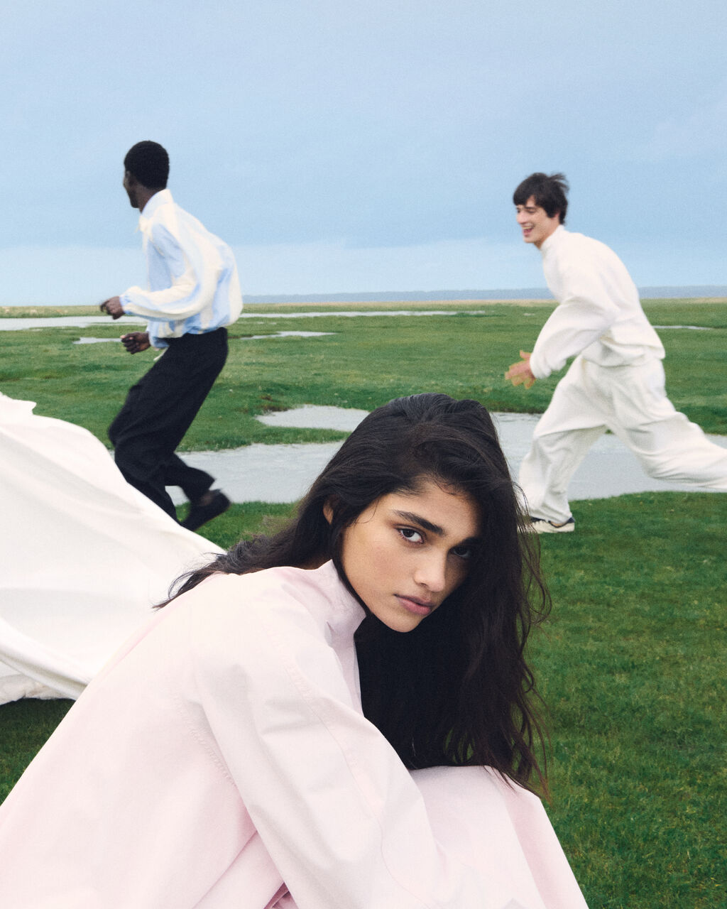

Fashion
Pourquoi on s'habille
La mode n'est pas futile. C'est la première phrase qu'on prononce sans parler : avant un mot, un vêtement dit d'où l'on vient, ce qu'on refuse, ce qu'on veut devenir.
Ici, on ne suit pas les tendances, on les lit : pourquoi une marque explose, pourquoi une silhouette revient, pourquoi un drop fait la queue un dimanche matin. De la friperie au défilé, on regarde ce que le vêtement raconte de l'époque.
Ce qu'on défend
Pas de hiérarchie entre le luxe et la seconde main : le style ne s'achète pas, il se compose. Une pièce chère mal portée vaut moins qu'un basique bien choisi. On juge l'allure, pas l'étiquette.
Jacquemus, l'enfant du Sud
Le vêtement comme carte postale
Avant d'être un créateur, Simon Porte Jacquemus est un conteur. Ses collections ne parlent pas de tissu, elles parlent du Sud de la France : le soleil, la mer, les champs, l'enfance. On n'achète pas une chemise, on achète un souvenir qu'on n'a jamais eu. C'est ça, sa vraie matière première : la nostalgie d'un ailleurs.
Dans un secteur obsédé par la nouveauté, il a fait le choix de l'intime. Parler de sa mère, de son village, de ses racines, quand tout le monde parlait de futur. Et contre toute attente, c'est ce retour au personnel qui a touché le monde entier.
Vendre un lieu, pas une pièce
Ses défilés le prouvent : un podium posé au milieu d'un champ de lavande, une autre fois dans les salines, une autre dans un champ de blé. Le décor n'est pas un fond, c'est le produit. L'émotion précède le vêtement.
Un champ de lavande, un sac minuscule, un gamin de la campagne. Jacquemus n'a pas vendu des vêtements : il a vendu une histoire. Et c'est peut-être la meilleure leçon de mode de la décennie.

L'image avant le tissu
Jacquemus a compris Instagram mieux que quiconque. Couleurs qui claquent, mises en scène absurdes et parfaites, un sens du cadre qui transforme chaque post en carte postale. Il ne fait pas de la mode qu'on photographie ; il fait des photographies qu'on habille.
Le micro-sac, maxi-symbole
Le fameux sac minuscule, trop petit pour y ranger quoi que ce soit, résume tout : un objet inutile devenu viral précisément parce qu'il est absurde. La fonction a disparu ; reste le signe. Et le signe, lui, se vend par milliers.
Il n'a pas gagné en faisant de plus beaux vêtements. Il a gagné en racontant une meilleure histoire.